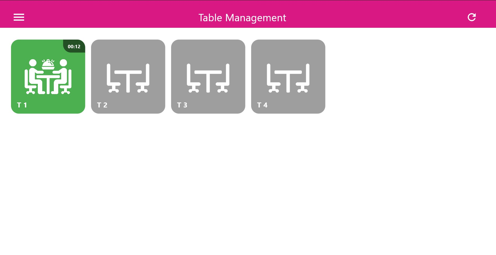
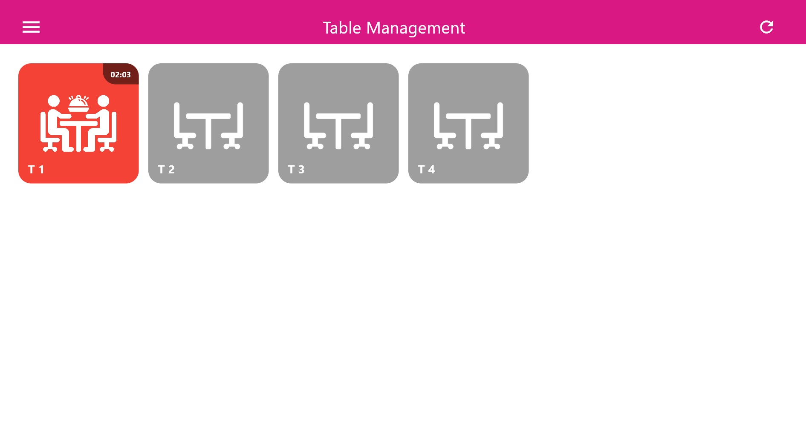
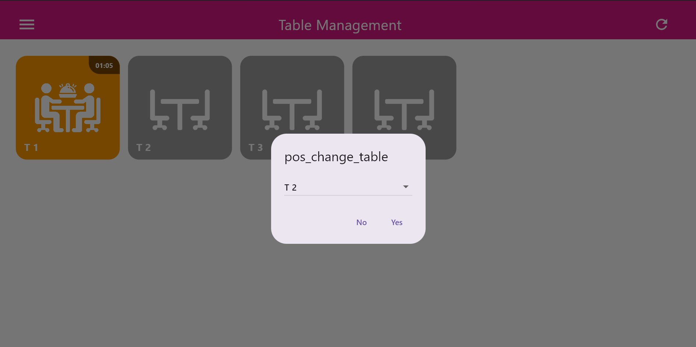

Smart Waiter enhances dine-in operations by introducing table awareness and service timing intelligence
directly into the POS workflow. It enables waiters, cashiers, and kitchen staff to operate on the same
real-time dataset without manual coordination.
- Native integration inside the Smart POS application
- Real-time table occupancy and timing tracking
- Direct order dispatch to kitchen stations
- Reduced service delays during peak hours
- Accurate table-level reporting and accountability
Accessing Table Management
Smart Waiter is accessed directly from the Smart POS main menu through the Table Management option. This view serves as the central control point for all dine-in operations within the POS environment. Upon opening the Table Management screen, the system loads and displays all tables configured for the active branch, including their current status, occupancy state, and associated timing indicators.
Smart Waiter is accessed directly from the Smart POS main menu through the Table Management option. This view serves as the central control point for all dine-in operations within the POS environment. Upon opening the Table Management screen, the system loads and displays all tables configured for the active branch, including their current status, occupancy state, and associated timing indicators.

POS Menu → Table Management
Selecting a Table
Selecting a table marks the beginning of a dine-in session. Once selected,
the table becomes active and all subsequent orders and actions are linked to it.

Selecting an Available Table
Table Status & Timing Indicators
Smart Waiter visually tracks service timing using color-coded table states.
These indicators help staff prioritize attention and avoid service delays.
- Green: Table just selected, customers are seated
- Orange: Waiting threshold reached (e.g. 1 minute)
- Red: Extended waiting time detected (2 minutes or more)

Green – Newly Occupied

Orange – Attention Needed

Red – Service Delay
Creating an Order
After selecting a table, the waiter proceeds to the POS ordering interface.
Products are added using the same category structure, modifiers, and notes
available in standard POS operations.

Order Creation Linked to Table
Sending Orders to the Kitchen
Once confirmed, the order is instantly dispatched to the kitchen display system.
Items are routed to the appropriate preparation stations and tracked in real time.

Order Sent to Kitchen
Table Commands
Once a table has an active order, Smart Waiter exposes a set of table-level commands
directly within the POS interface.

Table Management Commands
- View Order Details
- Edit Order (POS Edit)
- Change Table
- Pay Table
- Clear Table

View Order Details

Change Table
The Smart Waiter module, fully integrated into the Smart POS application, provides a structured and efficient
approach to managing dine-in operations without relying on external or standalone waiter applications.
By centralizing table management, order creation, kitchen dispatch, and payment workflows within a single
POS environment, the system ensures operational consistency and data integrity across all service stages.
Through real-time table status tracking, configurable timing thresholds, and clear visual indicators,
staff are able to monitor customer flow, prioritize service, and reduce table idle time.
The ability to execute table-level actions such as editing orders, changing tables, clearing sessions,
and finalizing payments directly from the POS significantly reduces service delays and operational errors.
From a technical standpoint, Smart Waiter leverages the core POS infrastructure for authentication,
synchronization, and reporting. All dine-in interactions are recorded at the POS level, ensuring that
sales data, kitchen activity, and staff performance metrics remain aligned and accessible for analysis.
Overall, Smart Waiter transforms the Smart POS into a complete dine-in management solution, enabling
restaurants to streamline front-of-house operations, maintain accurate kitchen coordination,
and deliver a more controlled and responsive dining experience.